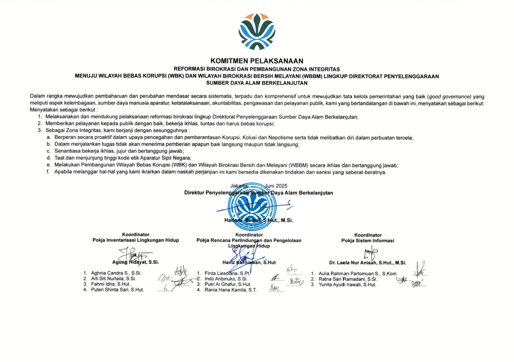
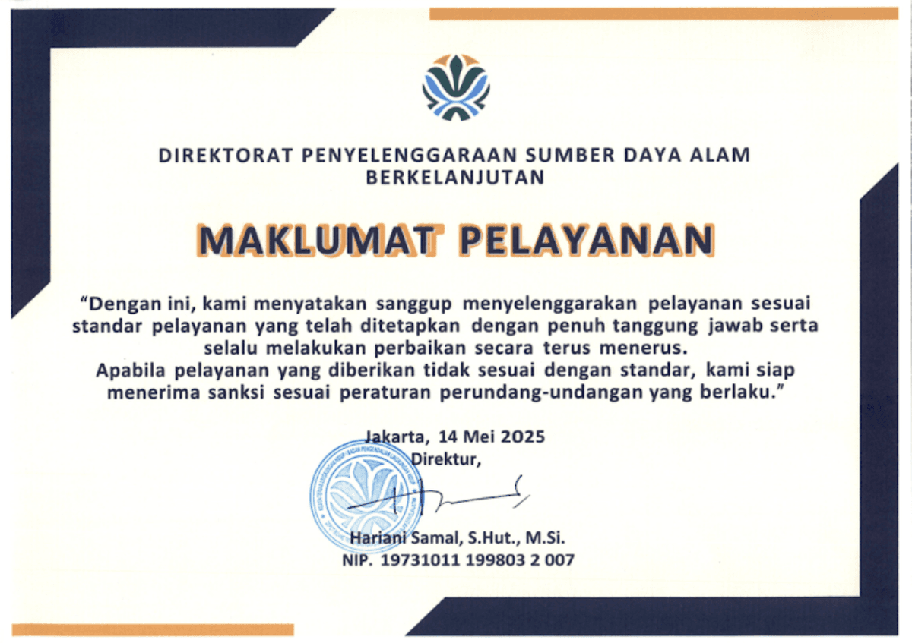

Sistem terpadu Direktorat Penyelenggaraan Sumber Daya Alam Berkelanjutan untuk memfasilitasi penyusunan RPPLH, integrasi data keruangan (EGIS), dan pemetaan Informasi Geospasial Tematik secara transparan dan akuntabel.
Direktorat Penyelenggaraan Sumber Daya Alam Berkelanjutan menyediakan layanan unggulan untuk mendukung pengelolaan sumber daya alam yang berkelanjutan di seluruh Indonesia.
Fasilitasi penyusunan RPPLH, bimbingan teknis, dan penerbitan Surat Saran & Masukan resmi untuk Pemerintah Daerah Provinsi dan Kabupaten/Kota seluruh Indonesia.
Akses 16 Informasi Geospasial Tematik (IGT) lingkungan hidup berbasis GIS melalui platform EGIS untuk perencanaan dan pengelolaan wilayah yang presisi.
Komitmen dan pernyataan resmi Direktorat Penyelenggaraan Sumber Daya Alam Berkelanjutan


Komitmen ASN Direktorat Penyelenggaraan Sumber Daya Alam Berkelanjutan dalam melayani masyarakat dengan penuh integritas